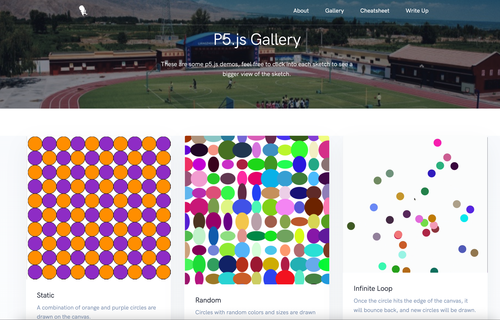

Overview and Usage
Overview: This project is created using p5.js and features six different sketches, ranging from static to interactive. The first graph consists of orange and purple circles drawn on the canvas. The second graph features circles with random colors and sizes. The third graph features circles that bounce back when they reach the edge of the canvas, with new circles being drawn. The fourth graph is interactive, with circles jumping when the mouse is clicked, with the speed of the jump depending on the clicking speed. The fifth graph allows users to play sounds by pressing the keys "A", "S", "D", "F", "G" on the keyboard, and the height of the corresponding piano key increases as the keys are pressed. The final graph is a spectrum made of circles that fluctuate based on the user's spoken audio input.
Usage: To view all the sketches, you can click the "Gallery" tab in the navigation bar or go to the home page and click "P5.js Gallery." Both options will take you to the gallery page, where you can explore each sketch by clicking "Check it out."
Usage: To view all the sketches, you can click the "Gallery" tab in the navigation bar or go to the home page and click "P5.js Gallery." Both options will take you to the gallery page, where you can explore each sketch by clicking "Check it out."
Or, you can click the linked text below to view the gallery page.
Check it out

Development Process
Below are the concrete steps I took while developing each sketch. The overall process contains some similarities, as no matter what graph I create, I always need to set the background, create a canvas, and have a draw function to render the content.
- First graph:
- Create a canvas of the desired size.
- Set the background color.
- Use nested for loops to draw circles on the canvas, alternating between orange and purple colors.
- Use the circle() function to draw the circles, with the x-coordinate and y-coordinate being incremented by 50 in each iteration of the loop, and the size being set to 50.
- Use the fill() function to set the color of the circles based on the sum of the x-coordinate and y-coordinate being an even or odd number.
- Second graph:
- Create a canvas of the desired size.
- Set the background color.
- Use a for loop to draw circles on the canvas with random colors and sizes.
- Use the fill() function to set a random color for each circle using the random() function.
- Use the circle() function to draw the circles with the x-coordinate and y-coordinate being incremented by a random amount in each iteration of the loop, and the size being set to a random value.
- Third graph:
- Create a canvas of the desired size.
- Set the background color.
- Use a for loop to draw circles on the canvas that bounce back when they hit the edge of the canvas.
- Use variables to keep track of the x-coordinate, y-coordinate, and speed of the circle, and update them in each iteration of the loop.
- Use an if statement to check if the circle has hit the edge of the canvas, and reverse its speed if it has.
- Use the circle() function to draw the circle, and the fill() function to set its color.
- Fourth graph:
- The canvas is created with a width and height equal to the window's width and height.
- The initial y-coordinate of the circle is set to be 50 pixels above the bottom of the canvas.
- The initial speed is set to 0 and the gravity is set to 0.5.
- In the draw() function:
- The background is set to white.
- An orange circle is drawn at the x-coordinate of the canvas's center and y-coordinate of "y".
- The value of "y" is updated by adding the value of "speed".
- The value of "speed" is updated by adding the value of "gravity".
- If the value of "y" is greater than the height of the canvas minus 50, the value of "speed" is updated to be -0.9 times its original value and the value of "y" is set to be height minus 50.
- If the value of "y" is less than 0, the value of "speed" is updated to be negative of its original value and the value of "y" is set to 0.
- In the mousePressed() function, the value of "speed" is decremented by 15.
- For the fifth graph:
- Create a function to handle the press of the keys "A", "S", "D", "F", "G".
- Use the `keyPressed()` function to detect when the keys are pressed.
- When the key is pressed, play the corresponding sound using the `sound()` function in p5.js.
- Visualize the sound by changing the height of the corresponding piano key on the canvas when the key is pressed.
- For the sixth graph:
- Create an audio input (mic) and an FFT object to perform a Fast Fourier Transform on the audio input
- Initialize an array of Circle objects and specify their starting position and size
- In the draw function:
- Clear the background
- Perform an FFT analysis on the audio input
- Update the position of each Circle based on the sound level in the audio input
- Display each Circle on the canvas
- Define the Circle class with methods to update the position based on the sound level and to display the Circle on the canvas
Issue
When creating an effect for sketch 5 in p5.js, I encountered a problem with not knowing how to play sound. I struggled for a bit to find a solution.
- I looked at the sample code provided by p5.js
- I modified the demo code within the online compiler
- I made changes to the code to achieve the desired outcome
As a result of these steps, I was able to resolve the issue and play sound in the effect for sketch 5.
Ideas and Future:
- Try out more complex functionality of p5.js and make the output visual graph more visually appealing
- Create a sketch that can listen to click, hover, and keyboard pressing events, making the user experience more versatile
- Add a color theme for existing works and make them look nicer as well
Ultimately, the ideas and features I choose to add to my website should align with my goals for the site and the audience I hope to reach.